제 1 장 서론
1.1 연구배경
우리나라는기업가적 생태계 측면에서 정부는 몇 년간 벤처창업 생태계 활성화를 위해 많은 정부정책을 지원해왔지만 이러한 생태계 또한 수도권에 집중이 되는 문제가 발생했다. 특히 기술 창업기업의 수에 있어서는 수도권과 비수도권의 차이가 60% 이상 차이를 보이고 자금을 지원하여 성장을 도와줄 벤처캐피탈의 수도 10배 이상 차이가 있다. 창업생태계에서 우수한 성장을 보였다고 평가받는 기업가치가 1조원 수준인 소위 유니콘기업은 지역에는 한 개의 기업도 존재하지 않으며 유니콘에 근접한 기업들의 수도 7배 이상 차이를 보이고 있다. 이러한 상황을 타개하기위해 창업관련 학회, 포럼에서지역창업생태계 활성화에 대한 방안들을 제시하고 있다(STEPI, 2016).
또한 우리나라는 GDP 대비 전세계 1~2위의 비중으로 R&D투자를 하는 반면 연구가 사업화 등에 실사용되는 비율이 1% 수준인 R&D 패러독스를 겪고 있다. 대학도 마찬가지로 연간 연구비 약 10조를 사용하지만 기술사업화를 위한 기술이전 비용은 1000억원 정도로 전체의 1% 수준에 해당하는 모습을 보이고 있다. 이러한 사항에서 대학은 지역의 발전과 관련하여 새로운 기술의 개발과 인재양성 측면에서 주요한 주체로서 인식이 되고 있으며 지식 공장의 수준에서 지역 수요에 의한 각종 연구 및 활동을 추진하는 관계적 역할로서 변화해 왔다(Uyarra, E., 2010). 대학 교원과 연구자 및 학생의 기업가 활동을 장려하는 역할로 기업가형 대학을 정의하기도 한다. 또한 기업가형 대학은 대학에서 창출된 기술이전을 통해 사업화와 창업의 성과를 대학이 공유하는 것뿐만 아니라, 국가 경제성장에 기여하는 활동과 기업가정신 하에서 다양한 외부 기관과의 상호 협력관계를 바탕으로 가치 창출과 사회경제 발전에 기여하는 것을 중요한 기업가형 대학의 활동(임한려, 홍성표, 2020)으로 보았다. 대학에서도 창업을 촉진하기 위해 다수의 창업지원센터가 운영되고 있으며 대학기술지주회사는 기업가적 대학으로 변화를 유도할 대학 차원의 주체라고 할 수 있다. 대학기술지주회사는 대학의 재정에 기여하는 수익을 창출할 뿐만 아니라 대학 창업을 촉진하고 성장을 지원하는 기능도 수행한다. 이는 대학이 민간 벤처캐피탈이 투자위험과 수익성 문제로 투자를 기피하는 대학 창업기업을 지원할 수 있는 최적의 대안이 될 수 있기 때문이다(김도성, 안성필, 2020) 우리나라는 2008년 산학연협력기술지주회사 설립절차 등에 관한규정을 설립한 이후 현재까지 77개의 기술지주가 설립이 되었다. 하지만 활성화 되어있는 대부분의 기술지주회사들은 우수한 대학에서 출자한 기술지주회사들로서 마찬가지로 수도권에 위치하고 있으며 지역에서는 지역이 공동으로 출자하여 만든 공동기술지주회사들이 활성화가 되어 있다. 이러한 배경에서 본 연구는 기술지주회사의 설립 유형인 단독설립형 기술지주와 주로 지역대학이 공동으로 출자하여 설립한 공동기술지주의 현황과 성과분석을 통해서 대학기술지주회사의 활성화 방안을 위한 시사점을 도출해 보고자 하며 이러한 연구는 창업생태계안에서 대학 기술사업화의 활성화를 위한 정책 설계시에 기술지주회사를 더욱 심도있게 고려할 수 있게 하는 연구로서 의의가 있을 것이다.
<그림1>4년제 대학연구과제 및 연구비 현황
(대학연구활동 실태조사 분석보고서, 2021, 한국연구재단)
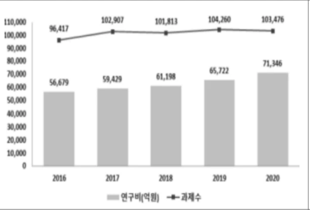
<그림 2> 대학의 연도별 기술이전 사업화 실적현황
(대학 산학협력활동보고서, 2021 한국연구재단)
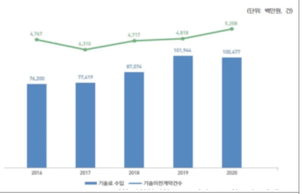
1.2 연구 주제 선정
단독설립형 기술지주는 대학의 자율성을 최대한 확보가능하고, 회사의 중요한 의사결정시 대학의 이익을 위한 핵심관계자 의견 반영이 용이하다는 장점이 있지만 기술지주 회사를 통한 기술연계 사업화를 위한 협력에 어려움이 있고, 자회사의 경영 및 재무 등의 지원을 위한 회계사, 변리사, 투자전문가등의 전문인력확보가 어렵다(박민규, 2015). 반면 공동설립형 기술지주회사는 대학 이외의 외부기관 또는 기업이 참여하는 형태로 설립된 기술지주회사이며 단독으로는 부족한 재원을 공동으로 출자하여 한정된 재원과 전문인력에 대한 문제를 해결하는 모델이다(STEPI, 2014), 이번 연구를 통해 공동설립형 기술지주와 단독기술지주의 현황과 성과를 비교하고 우수한 공동기술지주회사의 사례와 지역에서의 공동기술지주회사의 우수사례를 통해 대학기술지주가 창업생태계에서 활성화되기 위해 개선되어야 할 점을 시사해보고 지역에서 공동설립형 기술지주의 설립에 대한 타당성과 다른 대학기술지주회사의 활성화 방법 및 활용방법에 대해 시사하고자 한다.
1.3 관련 연구동향
국내의 대학기술사업화 및 기술지주활성화 방안에 대한 시사점 연구는 다수 존재하고 있으며 크게 정책 및 사업모델과 관련된 부분과 핵심역량 부분으로 구분해 볼 수 있다. 정책 및 사업모델과 관련해서는 참여자들 사이에서 중개역량에 집중이 필요(조현정 외 2014, KISTEP), 공급확대에서 벗어나 수요기업의 연구개발 역량제고 확대 필요(서일원, 2017), 사업화 견인을 위한 한국형 기술지주회사 정립으로 기술지주회사의 기술사업화 활성화 재원확보가 필요(손수정, 2014), 기술지주회사에 대한 정부의 전폭적인 지원, 전문펀드의 조성이 필요(이태희, 2019), 자회사 지분보유 의무조항 개선, 발명자 직접 보상 및 법률정비 필요(정동덕, 2021) 등이 있으며 핵심역량 차원에서는 전담인력의 전문성 부족(이윤준 외 2013), 연구자 상호파견 고려(한성호, 2014) 등에 대한 사전 연구가 존재 했고 대학기술지주의 투자자 로서의 역할의 성과 분석을 통한 연구를 통해 대학기술지주는 벤처생태계의 일원으로서 민간 벤처캐피탈과 네트워크를 형성하고 공동투자를 진행함으로써 산업의 동향, 투자경험 그리고 외부 네트워크를 대학 내부로 가져와 대학의 기술이전 및 창업 전략을 성공적으로 추진하는 데 핵심적인 역할을 할 수 있을 것(김도성, 안성필, 2020)을 시사한 바 있다.
제 2 장 이론적 배경
2.1 스타트업 성장모형
스타트업의 성장모형으로 Howard Love의 스타트업 J-커브 (The Startup Up J-Curve)를 들 수 있다. 이 모형은 기업가적 성공을 위한 6단계(the six steps to entrepreneurial success)로 창업시작(create), 시제품 출시(release), 변화와 전환(morph), 비즈 니스 최적화(model), 스케일업(scaleup), 수익창출(harvest)을 제 시한다(Love, 2016). 1단계: Create(창업시작) 단계는 창업의 핵심요소인 아이디어, 팀, 자본을 기반으로 창업에 뛰어드는 시기이다. 전반적으로는 아이디어에 기반해서 자본은 취약한 상태로 자본을 확보하기 위해 액셀러레이터, 엔젤투자 등과 접촉한다. 2단계: Release(시제품 출시)단계는 창업팀이 시제품 또는 베타테스트 제품 등 테스트 마켓을 대상으로 하는 시제품을 출시하고, 시장으로부터 피드백을 받는 시기이다. 아이디어에 대한 과신, 기술에 대한 집착, 현장보다 이론이나 제품 중심의 사고로 시장의 피드백을 등한시하면 실패에 직면하는 경우도 존재한다. 3단계: Morph(변화와 전환)의 시기로 피드백을 기반으로 제품 또는 비즈니스 모델을 조정하는 과정으로 최적의 비즈니스 모델을 구축함으로써 시장진출 및 사업화 가능성을 제고하는 시기이다. 4단계: Model(비즈니스 모델 최적화)단계로 비즈니스 모델을 최적화하여 시장에 진입하는 단계로 시장에서의 브랜드 위상과 투자자본을 조달하는 시기이다. 5단계: Scale(스케일업) 단계는 시장진입의 성과를 기반으로 본격적인 성장을 도모하는 시기이다. 6단계: Harvest(수익창출) 단계는 스타트업이 규모화, 조직화, 사업모델 안착 등으로 스타트업에 참여한 창업가, 투자자들의 Exit 단계로 실질적인 수익창출의 과실을 얻는 시기다(Love, 2016).
<그림 3> 스타트업 J커브
(출처- Love, The Start-Up J Curve: The six steps to Entrepreneurial Success, 2016)
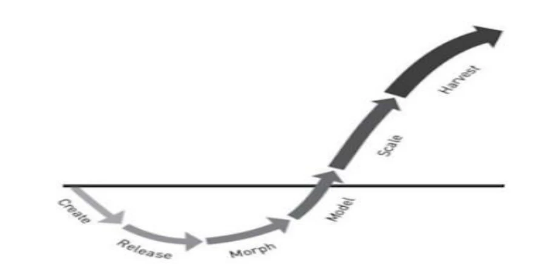
2.2기술수용주기와 캐즘(Chasm)
지금까지 혁신확산에 관한 연구는 Rogers(1962)의 저서 “Diffusion of Innovations”에 기술된 혁신확산 이론을 기초로 진행되어 왔다(김진성, 김종기, 2018). Rogers(1962)는 혁신자들은 모험적이고 혁신수용적인 성향이 강하기 때문에 신제품이나 혁신을 수용하는 데 따르는 위험을 기꺼이 감수하려는 경향을 보이는 집단이고, 조기 수용자들은 남보다 더 쉽게 혁신의 지각된 유용성을 인식하고 가치를 인정하는 경향을 보이며, 주변 사람들이 혁신을 채택하기 전에 먼저 정보를 얻고 혁신에 대한 주관적 평가를 주변 사람들에게 전파하는 의견 선도자 역할을 한다(서영수, 이승신 2014). Rogers는 혁신확산이론을 신제품 수요의 성장을 설명하는 이론으로 기술혁신의 수용자 관점에서 제안했다. 신제품이 시간의 경과에 따라 잠재 소비자들에게 채택되는 과정은 일반적으로 신제품 출시 초기에는 혁신자들에 의해서 느리게 채택되다가 점차 조기수용자들에 의해 채택됨으로써 급속한 성장이 이루어지고, 이후로 조기 다수자와 후기 다수자의 신제품 채택이 지속적으로 되면서 누적 수용자의 수는 증가하지만 그 증가율은 점차 감소하여 S자 형태의 패턴을 보이게 된다고 하였다(Rogers, 1995). Rogers는 혁신수용 시점을 기준으로 수용자의 유형을 아래의 5가지로 구분하고 있으며 수용시점에 따라 유형을 구분하였다. (Rogers, 2003).
<그림 4> 혁신수용시점에 따른 수용자 유형 분류
(출처-Rogers, E. M., Diffusion of Innovations(Fifth Edition), 2003)
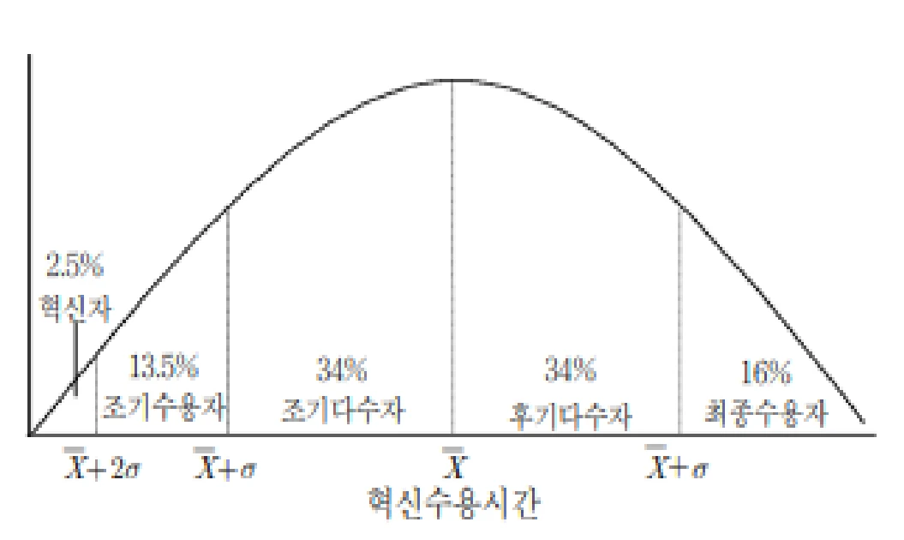
혁신수용자 유형별 특성으로 2.5% 정도의 규모에 해당하는 혁신자(innovator)는 모험적이고 혁신수용적인 성향이 강하기 때문에 신제품이나 혁신을 수용하는데 따르는 위험을 기꺼이 감수하려는 경향을 보이는 집단이고, 조기수용자(early adopter)집단은 13.5% 정도로 의견선도자 역할을 하는 집단이다. 한편, 후기다수자(late majority)는 혁신과 신제품 수용에 대한 의심이 많아서 조기다수자 등 다수가 채택한 후에 구입하는 경향이 있으며, 최후수용자(laggard) 집단은 변화를 거부하고 혁신 저항성이 강한 집단으로 신제품이나 혁신이 시장에서 완전히 수용되어야만 제품을 구매하는 집단이다(Rogers, 2003). Moore(1992)는 이러한 Rogers의 기술수용주기 이론을 첨단기술제품 시장에 적용하여 캐즘이론(The Theory of Chasm)을 발표했다(Moore, 1991). Moore는 혁신(기술)의 수용 과정에서 각 수용자의 범주 간의 서로 다른 시점에서 서로 다른 이유로 수용하는 가치관의 차이에서 ‘캐즘’이란 것이 발생한다고 설명하고 있고 특히 이 현상은 Early adopters와 Early majority 간극에서 가장 뚜렷하게 발생한다 하였다. 또한 혁신기술의 수용과정에서 특정 수용자 집단을 더 중요시하기보다 초기시장에서 주류시장으로 확장할 때 존재하는 단절을 어떻게 극복할 것인지가 매우 중요하다고 강조한다. 특히, 첨단기술을 다루는 업계에서 이 캐즘이 더 잘 보이는데 진보적인 기술일수록 다수 시장으로의 진입이 힘들기 때문이다. 그 이유로는 기술이 주는 가치를 소비자가 이해를 못할 수도, 시장에 적용할 시기가 적적하지 않아 사양 될 수 있기 때문이다(석재환, 2019).
2.3 액셀러레이터 이론
액셀러레이팅은 기업가정신을 육성하는 비교적 새로운 현상으로 2005년 미국의 Y- Combinator 프로그램을 최초로 보고 있으며, 이후 많은 액셀러레이터가 새롭게 등장하며 관심과 인기가 증가해 새로운 연구 기회를 제공하고 있다(Hallen, Cohen, 2020). 최근 액셀러레이터는 여타의 기관들과는 현저하게 구별되는 방식으로 스타트업의 성장에 도움을 제공하는 기관으로서 주목받고 있다(최윤수, 김도현, 2016; 이현호 외, 2017; Cohen & Hochberg, 2014). 액셀러레이터는 스타트업을 지원하기 위한 목적으로 운영되는 기관으로서 사업의 잠재력을 바탕으로 하는 평가 과정을 통해 선정한 스타트업이 초기 단계에서 겪게 되는 난관을 극복하여 독립적인 사업체로 안착하게 하는 것을 구체적 목적으로 삼고 있다(Cohen & Hochberg, 2014; Cohen et al., 2018; 김용재·염수현, 2014; 이정우, 2016; 중소벤처기업부, 2018). 우리나라는 2017년에 민간을 중심으로 초기창업자를 발굴하고 전문적으로 육성하며 초기 투자까지 연계하기 위해 창업기획자(액셀러레이터) 등록 제도를 도입했다. 또 벤처투자 촉진에 대한 법률(이하 벤처투자법)에 창업기획자(액셀러레이터)를 초기창업자(사업을 개시한 날부터 3년이 지나지 아니한 자) 등 선발과 투자, 전문 보육을 주 업무로 하는 자로 벤처투자 촉진에 관한 법 제24조 2항에 따라 중소벤처기업부에 등 록한 상법상 회사와 민법에 따른 비영리법인으로 정의했다. 중소벤처기업부 역시 해당 법령을 근거로 액셀러레이터 등록 요건 등을 정립했다(스타트업레시피, 2022).
액셀러레이터의 사업구조는 Miller & Bound(2011)와 Bergmann T. et al.(2020)에 따르면 ①자금구조 ②전략적 목표집중 ③선발과정 ④보육프로그램 ⑤네트워크로 이루어져 있으며, 보육프로그램은 멘토링, 교육, 성담서비스, 데모데이, 사무실공간, 투자기회로 이루어져 있다고 보았다. 최중빈(2019)은 스타트업과 관계를 형성하는 액셀러레이터 사업은 ①경쟁적인 선발 ②집중화된 교육 ③전문가 멘토링 ④네트워킹 ⑤데모데이 ⑥투자/회수의 과정을 통해 육성한다고 보았다 김영범, 양동우(2021)는 액셀러레이팅이 스타트업의 성과에 미치는 영향을 측정하기 위한 구성요소로 ①교육 및 멘토링, ②네트워킹, ③경영지원, ④자금지원으로 구분하여 실시하였고 액셀러레이팅의 교육 및 멘토링은 스타트업의 스케일업을 위한 혁신역량에 긍정적인 영향을 미치치고 자금지원만이 스케일업을 위한 경영성과에 직접적으로 긍정적인 영향을 미치고 나머지 요인들은 직접 영향을 미치지 않았다는 연구결과를 도출했다. 액셀러레이팅과 스케일업에 대한 실증연구 로 최윤수, 김도현(2016)은 액셀러레이터 역사가 짧아서 실증적 검증에 한계가 있으나, 액셀러레이팅은 기존의 투자방식과는 차이가 있으며 생태계의 중요한 역할을 한다는 긍정적인 입장과(Cohen, 2013; Hallen et al., 2014; Birdsal et al., 2013), 별로 차이가 없으며 이미 누군가 하고 있는 역할이라는 부정적인 입장도(Barrehag et al., 2012; Rosenbusch et al.; 2013, 강유리, 2014) 있다고 주장했다. 특히 Wallenius J.(2018)은 액셀러레이팅을 경험한 회사는 VC로부터 자금을 조달 한 비슷한 기업들보다 더 빠른 시기에 인수된다고 하였으며, Dilemma B. B.(2020)는 성공적인 액셀러레이팅은 참여자 모두에게 긍정적인 영향을미친다고 확인했다. 나기혁(2019)등 많은 선행연구에서 액셀러레이팅은 기존의 벤처투자와는 다르게 스타트업들이 창업 초기에 여러 어려움을 극복하고 성장할 수 있는 토대를 마련하는데 크게 기여한다고 주장하고 있다(김영범, 양동우, 2021).
2.4 기술마케팅 이론
연구성과의 사업화를 위해서 기술이전을 더욱 촉진하기 위해서는 기술이전에 마케팅이라는 관점을 투입한 더욱 효과적인 전략이 필요하다. 기술이전을 위한 전략은 크게 법적 모델, 행정적 모델, 마케팅 모델 등 3가지이다. (1992, Carr)
[표-1] 기술이전의 모델
출처: 기술혁신과 경영(지일용, 2021)_carr(1992) 내용 보완 정리
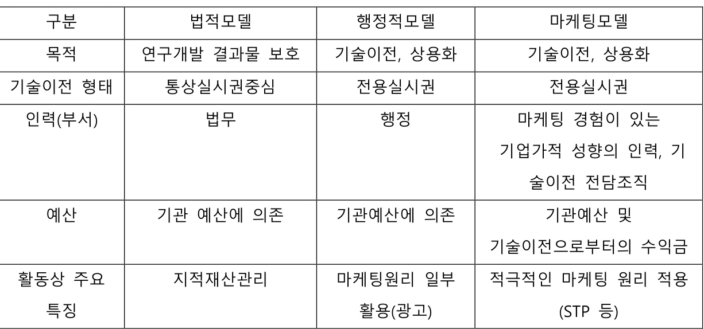
상기의 세가지 모델가운데, 맨 마지막의 마케팅 모델은 기술이전에 STP와 4P등 마케팅 원리들이 적용된, 매우 적극적인 기술이전 모델이다. 따라서 마케팅 모델에 의한 기술이전의 경우 기술자체에 대한 마케팅이라고 할 수 있다(지일용, 2021). 기술이전의 마케팅 모델은 그 방향성에 따라 공급추동형과 수요견인형으로 구분할 수 있다(Lane, 2019). 공급추동형은 어떤 기술을 보유하고 있는 측, 즉 공급자가 자신의 기술을 외부로 이전시키기 위해 기술이전 과정을 시작하는 것이고, 수요견인형은 기술을 실시하고자 하는 사용자가 필요한 기술을 찾아 나서는 과정에서 기술이전 과정을 시작하는 것을 의미한다(Lane, 1999). 기술이전과 관련된 주요 문제점 중 하나가 공급자와 수요자 사이에서 발생하는 정보 비대칭성 문제이며 수요주도형은 이러한 문제를 해결하기 위한 접근법이다(박웅, 박호영, 2014). 또한 성공적인 기술이전을 위해서는 기술 사용자의 요구가 중요하다고 주장한 연구도 있다. 사전에 수요기업을 발굴하고 추가 R&D를 진행하기 때문에 개발자와 수요기업 사이의 정보의 비대칭성을 해소하면서 수요자의 관심과 신뢰도를 상당 부분 해소할 수 있는 장점이 있다는 것이다(석명섭 외, 2015). 또한 한국건설기술연구원이라는 연구 대상을 선정하여 기술이전 프로그램을 수요기업 중심모델, 보유기술 중심모델, 컨소시엄 중심모델 3가지 유형으로 구분하여 사례 분석을 함으로서 각 유형의 특징과 차이점을 분석하는 연구를 통해서 보유기술을 기업에 홍보하는 일반적인 기술이전 마케팅보다 잠재적인 수요기업 발굴을 통해 기술이전을 하는 방법이 더 효과적이며 수요기업의 니즈를 고려한 R&D 사전기획이 기술이전 성과에 긍정적인 영향을 미친다는 결론을 제시한 연구도 있었다(황현덕, 정선양, 2015).
2.5 정보비대칭과 신호이론
신호이론은 경제학에서 사용되는 개념으로 특정집단에서 정보의 비대칭성이 생겼을 경우에 신뢰성을 얻기위해 신호를 준다는 이론으로서 스타트업 투자와 관련된 기존의 연구들이 존재했다. 스타트업은 일반적으로 자산이 많지 않고, 사업 이력이 전무하기 때문에 관찰할 수 있는 정보 자체가 부족하다. 이러한 제한된 정보에 의한 불확실성 때문에 투자자들은 기업의 품질과 수익 잠재력을 평가하기가 어렵다(Graham et al., 2009). 더욱이 기술기반 스타트업은 신생기업이 가지고 있는 불확실성뿐만 아니라, 새로운 기술이 본질적으로 가지고 있는 불확실성까지 가중된다(Rosenkopf & Tushman, 1994). 정보의 비대칭성 문제를 해결하는 방법으로는 신호, 선별, 3자검증 등이 있으며 본 연구에서는 스타트업 투자에 있어서 선별을 역할을 강화하고 3자검증을 하는 측면에서 공동투자에 대해서도 살펴보고자 한다. 투자기관은 벤처캐피탈의 전문성을 활용하기 위해서 투자 네트워크를 이루어 투자 건에 대한 정보 공유를 통해 공동 투자를 한다(Bygrave, 1987; 오진섭, & 김병근, 2017). 벤처캐피탈에서 투자하는 기업은 대부분이 정확한 정보를 얻기 어려운 기업이 대부분인데, 이런경우 다른 벤처캐피탈과 공동 투자를 통해 형성된 네트워크로 투자기업 관련 정보에 대해 상대적으로 더 많이 접할 수 있기 때문이다(Bonacich 1987). IPO나 M&A로 성공적으로 회수된 투자기업의 비율을 살펴보면 벤처캐피탈이 더 많은 네트워크를 가질 때 더 나은 성과를 보여주었다(Abell et al, 2007)는 연구가 있다.
제 3 장 국내 및 해외사례 비교
3.1 국내 기술지주회사 현황 및 성과 비교
산학연협력기술지주회사란 산학협력단 또는 연구기관이 보유하고 있는 기술의사업화를 목적으로 다른 회사의 주식(지분을 포함)의 소유를 통하여 그 회사를 지배하는 회사로서 2007년 「산업교육진흥 및 산학연협력촉진에 관한 법률」개정을 통해 산학협력기술지주회사 관련 조항이 신설, 2008년 기술지주회사 제도가 시행되었으며 2021년 6월 기준 총 78개 사의 기술지주회사가 운영중에 있다(KISTEP, 2021).
<그림 5> 대학기술지주회사 운영체제
(2021대학기술지주회사 제도 개선방안, KISTEP, 2021)
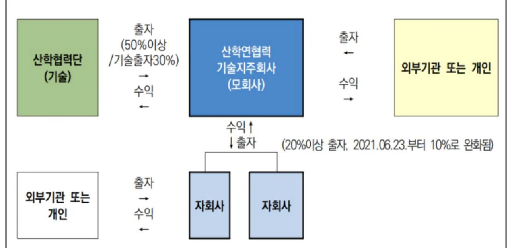
<그림 6>대학 기술사업화 관련 법령 및 주요 지원사업 현황
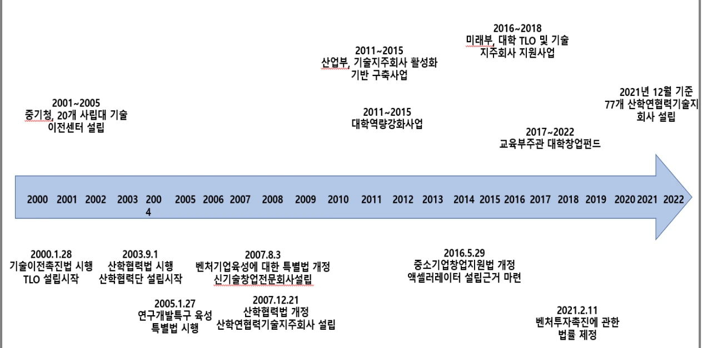
[표-2] 주요 대학기술지주회사
(크레탑 참조, 저자작성)
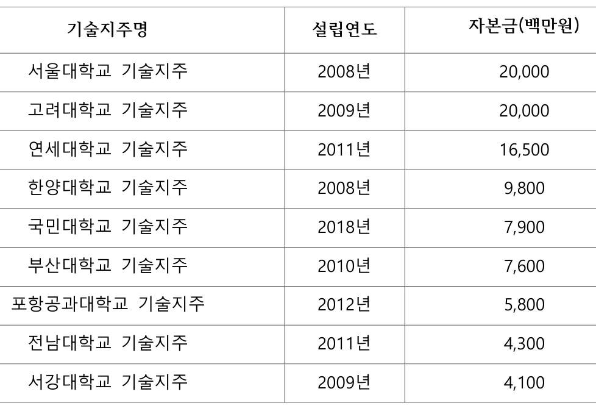
3.1.1공동기술지주
기술지주회사의 설립 유형별로는 단독설립형, 공동설립형이 있으며 공동설립형은 대학 이외의 외부기관 또는 기업이 참여하여 설립하는 기술지주로서 국내에는 총 11개 공동기술지주가 있으며 주로 지역TP와 지역대학이 연합으로 참여하는 대학연합기술지주형태로서 8개의 기술지주가 있으며 고려대, 연세대기술지주는 외부기업이 출자하여 공동기술지주에 포함되어 있다.
[표-3] 대학연합기술지주에 참여하는 대학
( 산학연협력기술지주회사 운영현황 조사 보고서, 2022, 한국연구재단, 저자 추가)
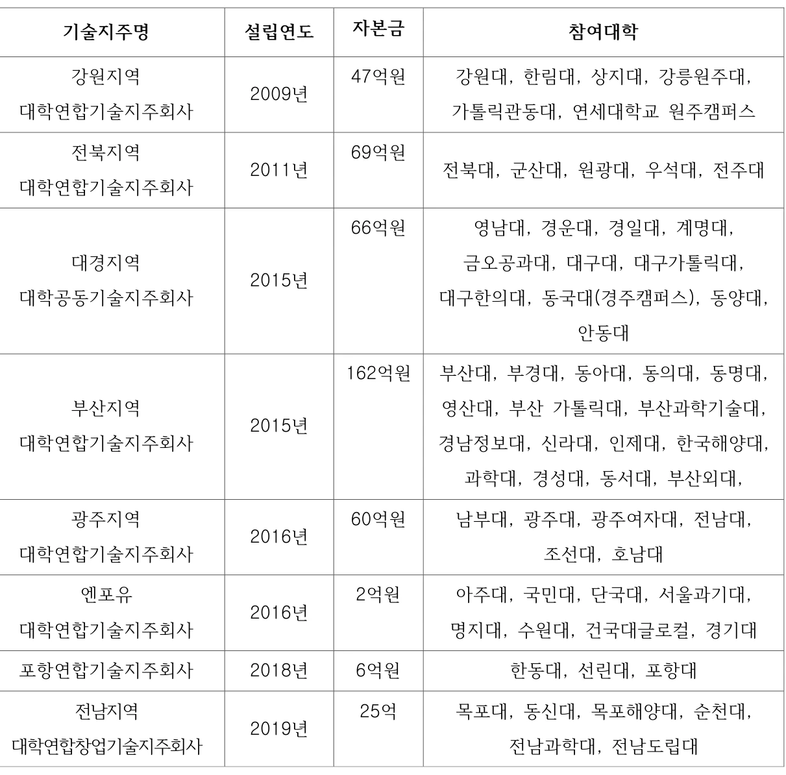
3.1.2신기술창업전문회사 형태 공동기술지주
신기술창업전문회사는 벤처기업육성에 관한 특별조치법에 의해 설립된 회사로서 대학이나 연구기관이 보유하고 있는 기술의 사업화와 이를 통한 창업 촉진을 주된 업무로 하는 회사로서 공공기술사업화의 관점에서 설립된 공동기술지주는 과기특성화 대학이 중심이 된 미래과학기술지주와 국가출연연구원이 중심이 된 한국과학기술지주가 있다. 산학연협력기술지주회사와의 차이점은 산학연협력기술지주회사 기술지주는 의무주식 비율이 10% 있으며 이를 충족하지 못하면 10년 이내로 자회사 보유 지분 전량 매각이 필요하다. 따라서 기술지주회사의 성과창출을 저해할 수 있으므로 기술지주회사 자회사 지분 보유 기준(10%)을 신기술창업전문회사와 같이 의무 보유주식 비율 관련 조항을 삭제하는 등 완화가 필요하다. (KISTEP, 2021)
[표-4] 신기술창업전문회사형태의 공동기술지주
(저자 작성)
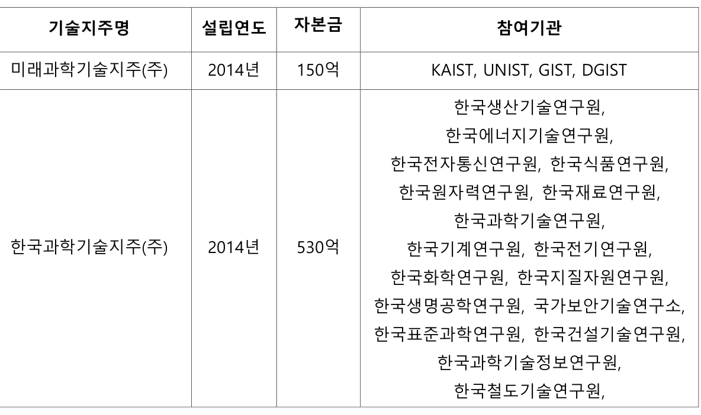
3.1.3 자본금 크기별 대학기술지주회사 3개년 평균성과
앞선 연구들에 따라 기술지주회사의 활성화를 위해서는 자본금 확충과 펀드지원, 인력지원등에 대한 논의가 있었으므로, 이에 대해서 우선적으로 확인하고자 하며 결과에 따른 추가적인 적합한 우수 및 비교사례를 찾고자 한다.
[표-5] 자본금 크기별 대학기술지주 3년간 성과 평균(2019~2021)
<산학연협력기술지주회사 운영현황 조사보고서 2019~2021 및 저자추가>
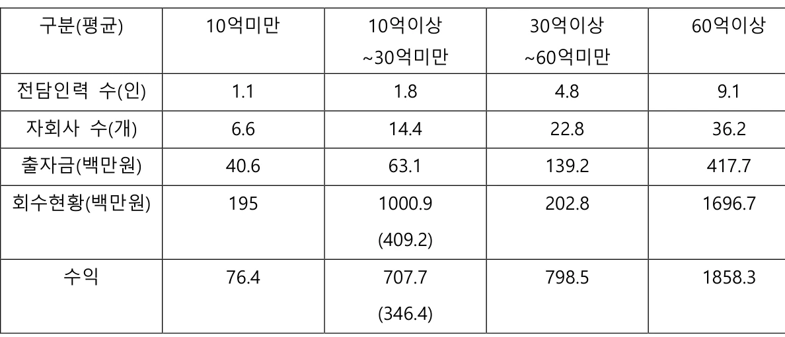
먼저, 이러한 분석은 모수가 작고 변수가 굉장히 많음으로 통계적 의의를 가질수 없다. 하지만 이후 추정에 대한 근거를 위해 확인한 것으로 자회사 수, 출자금 현황에 대해서는 자본금이 높은 만큼 정의 관계를 가지는걸로 추정할 수 있었다. 회수현황과 수익지표에 있어서는 자회사의 성과에 따라 결정이 되 부분으로 인하여 정의 관계를 가지고 있다고 할 수는 없다고 추정된다. 하지만 60억이상의 자본금을 가진 기술지주회사들은 3개년 평균 회수와 수익 현황이 가장 우수한 상황이다.
3.1.4 설립유형별 현황 및 성과
앞선 결과를 통해 자본금이 60억 이상으로 높은 기술지주회사의 경우 전문인력수가 많고 자회사 수, 출자금, 회수, 수익이 높다는 가능성을 추정하였다. 단독으로는 부족한 재원을 공동으로 출자하여 한정된 재원과 전문인력에 대한 문제를 해결하는 모델(STEPI, 2014)인 공동대학기술지주회사는 단독기술지주회사에 비해 실제로 우수한 성과를 내고 있는지 비교해 보고자 한다. 기술지주회사는 출자한 대학의 기술을 바탕으로 성과를 창출함으로 출자 대학의 특허, 기술이전, 창업 현황과 기술지주회사의 현황, 성과를 함께 비교하고자 한다. (가)설립 유형별 연관 대학현황
1.특허 수 3년 평균(2019~2021)
[표-6] 설립유형별 연관 대학 3년간 특허 수 평균 (2019~2021)
<대학알리미 공시 자료 참고, 저자수정>
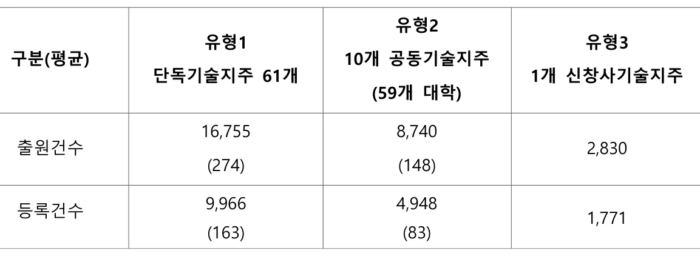
2. 기술이전 건수 3년 평균(2019~2021)
[표-7]설립유형별 연관 대학 3년간 기술이전 건 수 평균(2019~2021)
<대학알리미 공시 자료 참고, 저자수정>
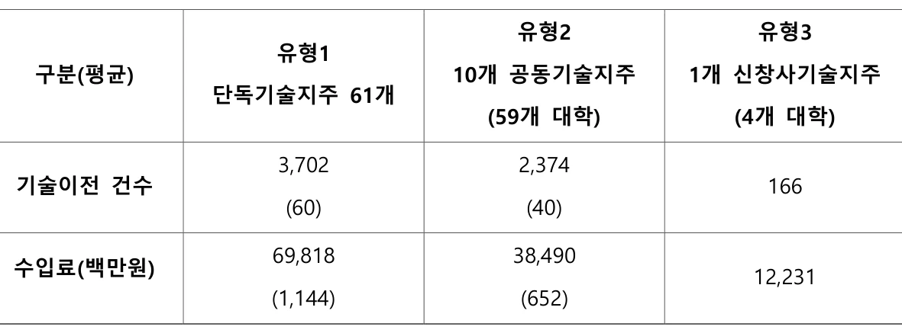
3. 학생/교원 창업 현황 3년 평균(2019~2021)
[표-8] 설립유형별 연관 대학 3년간 학생/교원 창업현황 평균(2019~2021)
<대학알리미 공시 자료 참고, 저자수정>
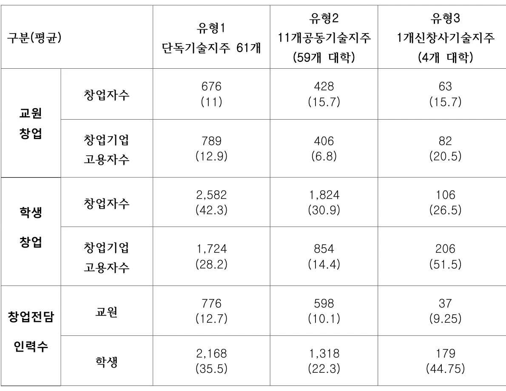
(나) 설립유형별 현황
[표-9] 기술지주 설립유형별 현황
<산학연협력기술지주회사 운영현황 조사보고서 2019~2021 및 저자추가>
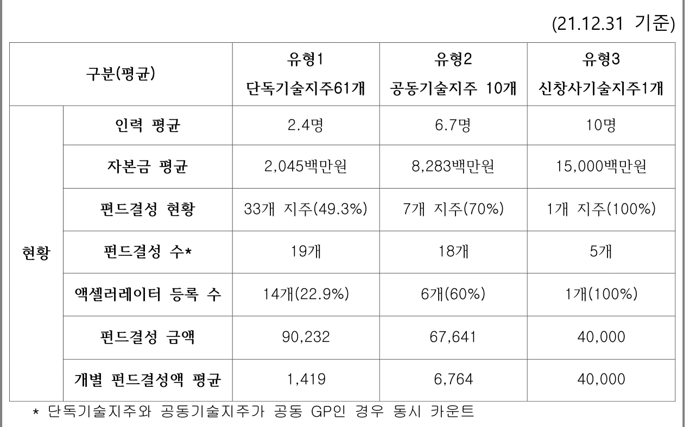
(다) 설립유형별 성과
[표-10] 기술지주 설립유형별 성과
<산학연협력기술지주회사 운영현황 조사보고서 2019~2021 및 저자추가>
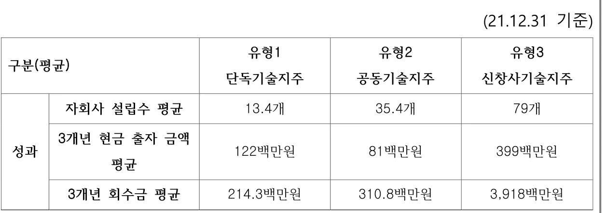
3.1.4 성과분석
마찬가지로 해당 내용에 대해서 모수가 작고 많은 변수를 통제하지 못하므로 통계적인 의의를 가질수는 없다. 하지만 해당 내용을 통해 다음 세가지의 가능성을 추정해 볼 수 있었다. 첫번째로 기술지주 회사의 성과에 출자한 대학의 창업자수, 특허출원/등록 수, 기술이전 건수와 무관하였고 자본금, 인력현황, 펀드결성 금액이 성과에 더욱 영향을 미친다. 두번째로는 유형별 지주회사의 성과 차이를 확인하였다. 공동기술지주는 단독대학기술지주보다 평균적으로 우수한 성과를 보이며 단독설립형 기술지주회사는 대학의 자율성을 최대한 확보할 수 있으며, 회사의 중요 의사결정 시 대학의 이익을 위한 핵심관계자의 의견 반영이 용이하다는 장점이 있지만 기술지주 회사를 통한 기술연계 사업화를 위한 협력에 어려움이 있다(2015, 박민규)는 것과 공동기술지주는 대학 이외의 외부기관 또는 기업이 참여하는 형태로 설립된 기술지주회사이며 단독으로는 부족한 재원을 공동으로 출자하여 한정된 재원과 전문인력에 대한 문제를 해결하는 모델(STEPI, 2014)이라는 앞선 내용들을 확인할 수 있었다. 세번째로 공동기술지주는 단독 기술지주에 비해 평균적으로 기업에 대한 현금출자가 활발하였다. 이는 대부분 지역에 위치한 공동기술지주가 지역에서 스타트업 투자기관으로서의 역할을 수행하고 있음을 확인할 수 있었고 액셀러레이터의 기본조건 중의 투자기능을 비교적 많이 가지고 있다는 것으로 추정할 수 있다. 이러한 사전 분석 내용에 따라 공동설립형 기술지주회사 형태 중 우수한 성과를 내고 있는 미래과학기술지주의 사례를 통해 우수한 기술지주회사의 성장사례를 확인해보고자 하며, 같은 지역 내에서 단독기술지주 회사들과 공동기술지주회사들의 현황을 부산지역의 사례를 통해 확인하여 시사점을 도출해보고자 한다.
3.2 공동대학기술지주회사 우수사례
3.2.1 미래과학기술지주
2013년 10월, KAIST, GIST, DGIST, UNIST 등 4개 과기특성화대학이 공동기술지주회사 설립을 위한 협약 체결미래부와 과기특성화대학이 참여하는 공동 기술지주회사 설립위원회를 통해 공동기술지주회사 설립 방안을 마련하고, ’14년 3월 17일 법인등기를 하였다(2014, KISTEP). 우수한 과기특성화대학의 연구성과를 기반으로 사업화를 하는 기업을 발굴하고, 사업전략 수립 및 투자, 성장지원을 통해 기업을 육성하기 위해 설립되어 우수한 성과를 달성하고있는 미래과학기술지주의 성장 배경을 스타트업 성장이론과 액셀러레이팅 및 기술이전 프로그램운영, 네트워크역량 측면에서 살펴보았다. ①스타트업 성장 지원 2014~2019년 초 미래과학기술지주 고유계정 기반 투자 총 44개 회사, 76억 투자를 진행하였다. 해당시기에 투자한 회사들의 우수한 성장을 바탕으로 이후 한국모태펀드의 투자조합을 차례로 결성을 하며 투자재원을 확대하였다. 2018년 12월에 한국모태펀드의 교육계정을 통해 최초의 펀드 조성을 하였고 2022년 말까지 총 5개의 펀드조성과 총 95개 회사에 289.5억원의 투자를 진행하며 활발한 기술사업화 투자활동을 이어가고 있다. 또한 기술아이템을 보유한 창업팀을 민간주도로 선발하여 미래유망 창업기업을 집중 육성하는 프로그램인 TIPS운영사로서 ‘22년말 기준 총 34개의 자회사에 TIPS 매칭을 연계하였다
<그림 7 >TIPS 프로그램 개요
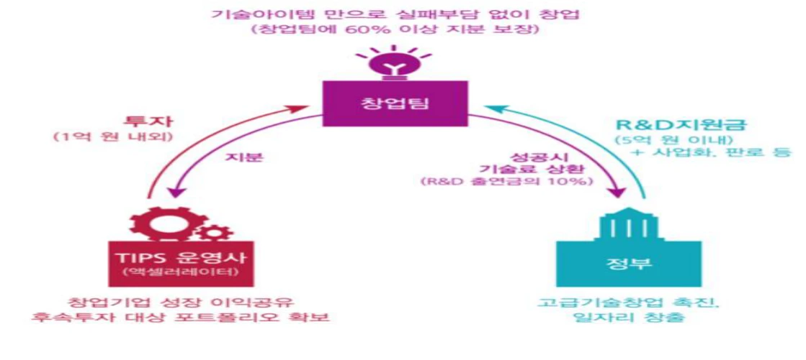
우수출자사례 1 클리노믹스(2015년 투자)
2015년 10월 2억원의 투자를 집행한 클리노믹스는 UNIST 1호 교원창업으로서 게놈기반의 헬스케어 사업과 액체생검 플랫폼 기반의 정밀의료 사업을 통해 추진하고 있으며 UNIST에서 시작한 유전체 분석 스타트업인 ‘제로믹스’가 2018년에 합병하는 방식으로 성장하였다. 2020년 12월 4일 코스닥에상장하면서 주식을 매각함으로서 투자원금 대비 약 35배의 회수 실적을 거두었다.
우수출자사례 2 스탠다드에너지(2015년 투자)
미래과학기술지주가 초기투자 및 TIPS 프로그램을 지원한 스탠다드에너지는 대용량 이차전지 시장에 진출하였으며 에너지 기술을 위해 차세대전력저장원으로 주목받고 있는 대용량 에너지저장장치(ESS)의 '대용량 이차전지 레톡스 흐름전지'를 개발하고 있으며 미래지주 투자이후, ESS 분야에서의 성장가능성을 바탕으로 LB인베스트먼트, 소프트뱅크벤처스의 후속투자와롯데케미칼에 650억원의 후속투자를 유치했다.
[표-11] 미래과학기술지주 펀드 현황
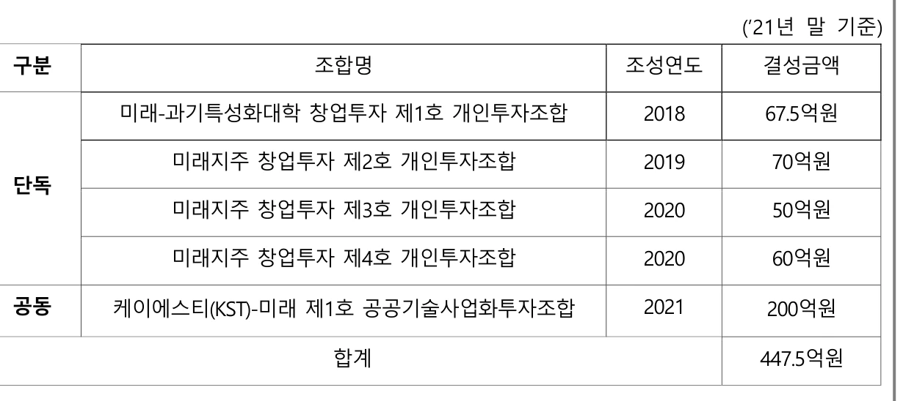
②액셀러레이터 프로그램 추진 및 수요견인형 기술마케팅 지원 미래과학기술지주는 공공연구성과 확산 및 실용화 사업, 대덕특구 액셀러레이터사업을 하면서 액셀러레이터의 사업구조를 수행하며 기업과 함께 성장해왔다. 앞선 논문에 따라 액셀러레이터의 사업구조인 자금, 전략적 목표설계, 선발과정을 거친 보육프로그램, 네트워크 지원, 멘토링 등을 수행하고 있다. 또한 기술마케팅이론에 따른 수요기반 기술이전을 통해 효과적인 기술사업화를 추진하기 위한 사업을 진행하였다. 이러한 주요 프로그램인 ‘공공연구성과 확산 및 실용화 사업’과 ‘대학기술경영촉진사업’에 대해 상세히 살펴보고자 한다. ②-1 공공연구성과 확산 및 실용화 사업 대학과 출연연의 우수한 연구성과를 기본으로 한 학생, 교원의 지속적인 발굴을 위하여 한국과학기술지주와 미래과학기술지주가 주관하여 2018년부터“공공연구성과 확산 및 실용화 사업”을 통해 매년 우수 창업기업을 50건 이상선발하고, 기술, 시장, 사업성 평가와 투자까지 연계하는 사업으로서 정부출연과 과기특성화 대학의 기술 기반의 공공연구성과를 활용하고 있거나 하려고 하는 (예비)창업팀 발굴을 하여 멘토링, 기술이전 매칭지원, 투자심사 및 투자, 이후 연계사업 지원을 통한 후속지원까지 기술창업의 전주기를 지원했다. 본 프로그램을 통해서 미래과학기술지주는 총 28개의 기업에 약 80억원의 투자를 진행하였고 투자기업은 투자 이후에 약 600억원의 후속투자와360억원의 R&D자금을 확보하는 지원을 받았다.
<그림 8>공공연구성과 확산 및 실용화 사업
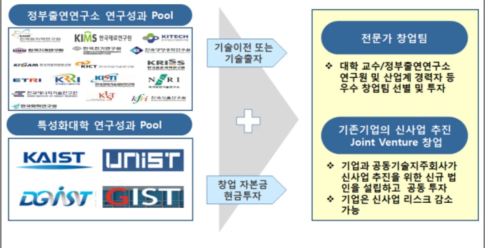
②-2 대학기술경영 사업 본 사업은 대학의 기술사업화 역량 강화를 위해 통합적 기술경영 개념을 도입하고 기술이전을 담당하는 조직인 TLO나 연구소들이 보유한 기술의 특허를 팔아 수익을 올리는 기관와 기술출자, 창업을 담당하는 기술지주회사 및 연구기관이 기술의 직접 사업화를 목적으로 지적재산권 관리, 기술이전, 창업, 기업 사후관리 등에 사업비를 집중 지원하는 사업으로 유관 조직간 유기적 연계, 융합 및 제도 정비를 통한 연구성과의 사업화 연계로 기술이전/창업 기반 성장 잠재력이 높은 대학혁신 기업 발굴/지원 프로그램 운영을 지원하는 사업이다. 2015년 이전까지 대학은 기술사업화 조직, 인력 기능이 산학협력단 및 기술지주회사 등으로 분산되어 효과적인 기술이전, 사업화 추진에 한계가 있었고 이를 해결하기위해 당시 미래부는 기술이전을 담당하는 조직인 TLO와 기술출자, 창업을 담당하는 기술지주회사간 연계, 협력활동을 강화하고, 기술이전이나 직접사업화 등 관련 활동을 종합적으로 조율하도록 할 계획으로 사업을 개편하였다. 본사업을 통해 기술이전 설명회, 기업들의 기술이전 희망 여부 확인, 후속투자를 위한 미팅 등을 지원하는 프로그램을 운영하였다.
[표-12]대학 TMC 사업 개편(안), 2015
(출처- 과기부, 2016)
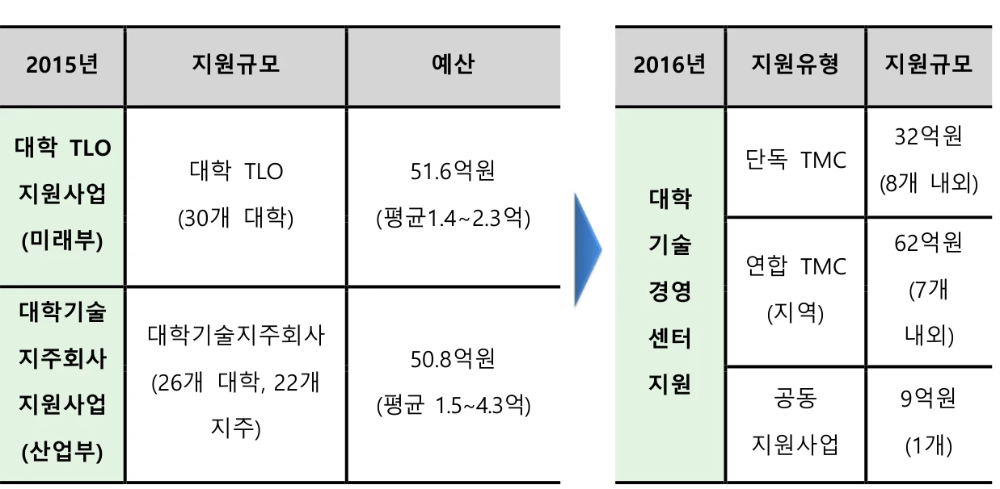
대학TLO와 대학기술지주회사 연계 체계를 대학기술경영센터(TechnolongyManagement Center, 이하 TMC)로 명명하고, 각 TMC는 통합된 하나의 대학 기술경영계획을 수립하였다. 미래과학기술지주는 2016년 연합 TMC에 선정이 되어 KAIST, UNIST, GIST, DGIST와 함께 3년간 사업을 추진하였고, 2021년에 KAIST와 컨소시엄으로 참여하여 우수 기업에 출자를 지원하였다. 설립 초기에 해당 프로그램을 통해서 지역에 분산되어 있는 4개 과기특성화 대학의 기술사업화, 기술이전 담당부서와 네트워크를 쌓을 수 있었고 지속적으로 창업팀 발굴, 기술이전 업무 연계를 추진하고 있다. ③교내 및 투자 생태계 네트워크 확장 미래과학기술지주는 앞선 사업들과 출자대학에 산학협력관 등에 개별 사무실을 두고 대학 담당자를 개별로 정하여 월 2~4회 방문을 하며 유관기관들과의 네트워크를 지속적으로 유지하고 있다. 또한 현재까지 약 30개 정도의 자회사들은 기관투자자들과 공동투자를 진행하였는데 약 30개의 투자기관과 약 140억원 수준의 출자를 하였다. 또한 200여개(중복 포함) 투자기관에 4,000억원 이상 후속투자를 연계하며 투자 생태계 내에서의 네트워크도 확장해왔다. 앞선 연구내용처럼 스타트업 투자는 정보비대칭성이 많은 투자생태계에서 공동투자라는 제3자검증형태의 정보불균형을 해소하면서 투자를 하게 되면서 우수한 투자를 할 가능성을 높였으며 유효하며 뿐만 아니라 투자생태계의 네트워크도 확장할 수 있게 하였다. 이러한 네트워크를 통해서 이후의 피투자기업이 투자자를 고르는 과정에서 미래과학기술지주의 투자기업, 후속투자 및 R&D성과, 네트워킹에 대해 정보불균형 속 신호를 줄 수 있음으로서 우수기업이 투자를 받을 수 있는 계기가 늘어나고 후속투자를 하는 투자기관도 미래과학기술지주의 출자 기업 포트폴리오에 관심을 가지게 되며 성과는 늘어날 수 있음을 보여준다. 이렇게 네트워크와 협업을 통해서 정보 비대칭상황이 높은 스타트업 투자 생태계에서 암시적 신호를 줌으로서 성장고리를 만들어갔다고 볼 수 있다.
3.2.2부산지역대학연합기술지주
부산연합기술지주회사는 ‘2030년 부산을 세계 30위 글로벌 혁신도시로도약시킬 수 있도록 인재양성과 기술혁신을 통해 혁신생태계를 조성’하기 위해 ‘TNT(Talent and Technology) 2030’의 핵심사업으로 부산지역 16개 대학 및 부산테크노파크가 주주로 참여하고, 부산광역시의 출연금을 통해 2015년 9월에 설립되었으며 공공기술 투자전문회사로서 지역 창업생태계 조성에 노력하고 있다. 16개 대학이 2018년까지 4년간 총 23억원을, 부산시는 부산테크노파크를 통해 4년 간 12억55,000만원씩 50억원의 현금 출자하는것으로 계획하였으며 현재 자본금은 162억원이다(허필우, 2018).
<그림 9> 부산연합기술지주 개요
(출처-부산시, 2017)
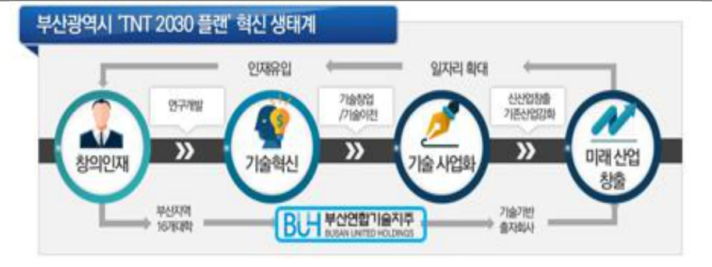
부산지역연합기술지주의 투자활성화 차원에서의 자회사 출자 성과는 비슷한 지역에서의 다른 모든 기술지주의 합계보다 우수하며 부울경 지역의 단독 기술지주들의 자본금의 합산 값이 유사한 점에 따라 비교하여도 우수한 성과를 달성하고 있다. 하지만 자본금이 낮은 기술지주의 경우 현물출자를 통한 자회사 설립이 많으므로 정확한 비교를 하였다고 보기에는 어려움이 있다.
[표-13]부울경 지역 기술지주 현황
(출처- 크레탑 및 각 지주회사 홈페이지)
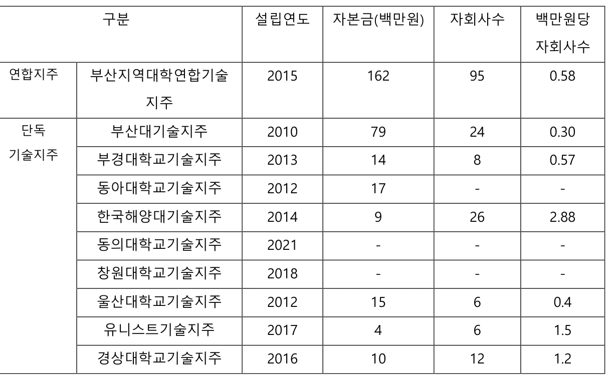
부산대학교기술지주와의 비교에서 부산대기술지주회사는 단독기술지주회사 중에서도 자본금이 높은 순위에 있고 출자수가 높은 우수기술지주중에 하나이지만 공동으로 설립된 부산연합기술지주가 짧은기간내에 비교적 더욱 우수한 성과를 달성하고 있다. 이는 부산지역연합기술지주회사는 일정수준의 자본금이 있다고 하더라도 기술지주의 성장에 있어서는 아니라 지자체의 펀드지원, 스타트업 지원 및 TIPS 프로그램 연계, 액셀러레이터 프로그램, 기술사업화 지원 프로그램 운영 등에서 다른 부산대기술지주와 차이를 보였기 때문으로 생각해 볼 수 있으며 부산연합기술지주의 성장사례를 제시한 이론에 근거하여 확인해보고자 하였다. ①스타트업 성장 지원 및 자금지원 부산지역연합기술지주는 부산시, 부산테크노파크, 출자대학의 자본금 등으로 현재 자본금은 162억원이다. 2016년 부산연합 제1호 개인투자조합을 만들면서 투자재원을 꾸준히 확보하면서 성장하고 있으며 현재까지 총 5개의 펀드조성과 총 95개 회사에 투자를 진행하였고 최근 4년간 총 49개 회사에 100억원 가까이 투자를 진행하며 활발한 성과를 보이고 있다(창업기획자 공시 DIAA 참고). 또한 TIPS운영사로서 현재까지 총 17개의 회사에 투자 및 팁스지원을 연계하며 액셀러레이터로서의 역할을 수행하고 있다.
[표-14] 부산대학연합기술지주 조합결성 현황
(출처: 창업기획자 공시, DIAA)
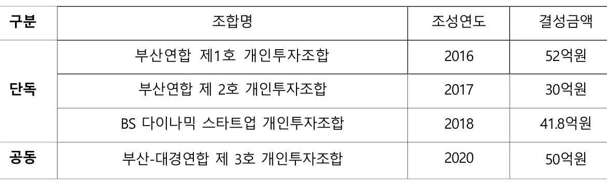
[표-15] 부산대학연합기술지주 4개년 투자 실적
(출처: 창업기획자 공시, DIAA)
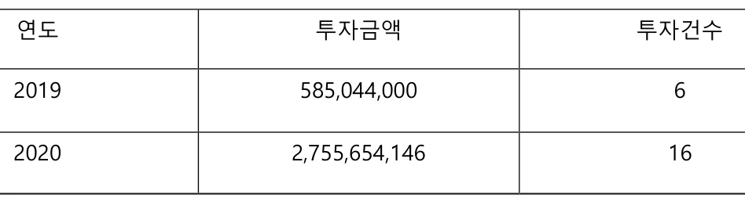
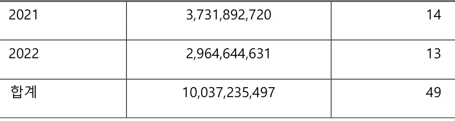
②액셀러레이터_프로그램 추진 및 수요견인형 기술마케팅 지원 ②-1 Fly 프로그램 지원 부산지역연합기술지주도 마찬가지로 앞서 살펴보았던 사전 연구의 액셀러레이팅의 사업구조를 충족하고 있으며 창업생태계의 수도권 집중을 탈피하고 부울경 지역의 창업생태계 조성을 도모하고 있다. FLY for Start-up 프로그램은 부울경 지역에 본사 혹은 지사를 둔 창업 7년 이내 스타트업을 대상으로 멘토링, 네트워크, 글로벌역량, 투자 및 TIPS 연계까지 종합적으로 지원하여 스타트업의 성장을 지원하고 있으며 Fly for Scale-up 프로그램을 통해서는 글로벌, 마케팅 및 10억 이상의 Scale-UP을 위한 투자까지 지원하고 있다.
[표-16] FlY for Start-Up 프로그램
(출처 – 부산연합기술지주 홈페이지)
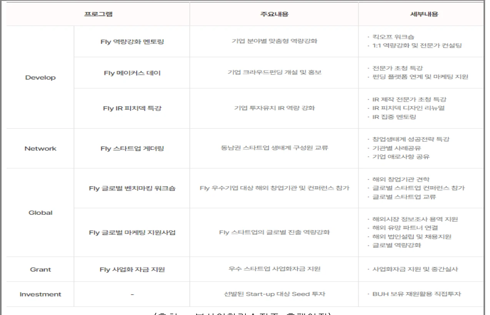
[표-17] FlY for Scale-Up 프로그램
(출처 – 부산연합기술지주 홈페이지)
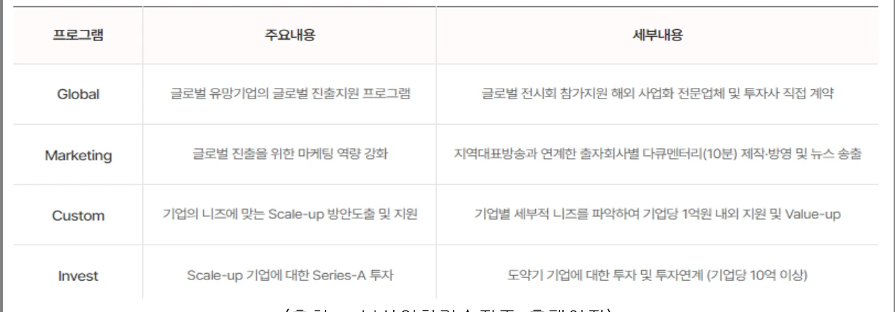
②-2대학기술경영 지원사업 TMC 부산지역연합기술지주회사는 미래과학기술지주와 마찬가지로 2016년대학기술경영 지원사업이 개편되었던 2016년에 주관기관으로 사업에 선정되어 동명대, 동서대, 동아대, 동의대, 한국해양대 대학 등과 함께 사업을 추진했다. 이를 통해 IP 빅데이터, 기술마케팅, 전략커뮤니티 운영, 기술이전·창업 후속지원 등의 사업을 추진 하였으며 2019년 이후에도 2기 사업에 선정되어 컨소시엄과 함께 사업을 지속해오고 있다.
3.2 해외의 대학기술사업화 우수사례
국내 기술지주회사 간의 유형별 성과분석에 이어 해외의 대학기술사업화 및 대학간 연합을 통한 대학 기술사업화 촉진의 사례를 통해 성과분석의 타당성을 확인해보고자 한다. 먼저 영국의 경우 대학기술사업화를 위한 프로그램인 UCSF의 사례를 분석해보고자 하며 지역에 조성된 클러스터를 기반으로 지역균형을 갖추면서 기술창업이 활발한 국가인 독일의 사례를 분석하면서 지역창업생태계의 균형과 대학 사업화의 시사점을 찾아보고자 한다.
3.2.1 영국의 대학사업화 지원 사례 UCSF 프로그램
영국은 유럽내 국가별 스타트업 생태계에서 1~2위를 다투는 국가이며 1985년이후부터 대학과 연구기관에서 직접 연구성과물의 관리와 사업화를 진행하기위해 기관 내 부서나 독립적인 회사 형태로 기술 이전 전담조직을 설립하여 운영하였다(류태규, 이성상, 2009). 기관 내 부서나 독립적인 기술이전 회사로 설립되었던 기술이전 전담조직은 정부 지원 등을 바탕으로 활동 범위가 넓어지고, 사업 분야가 확대되면서 기술이전이나 기술 컨설팅만이 아니라 창업 보육, 기업 설립 및 투자를 동시에 하는 기술사업화 지원 회사로 확대, 발전하게 되었다. 우리나라와 비교할 때 통합형 기술사업화 지원회사라고 할 수 있으며 기술사업화 활동에 필요한 기능 부서(기술이전, 자금 투자, 컨설팅, 지식재산권 관리, 포트폴리오 기업 관리 등)를 기술사업화 지원 회사의 내부 부서나 팀으로 운영하는 경우가 많다. (이성상, 2017) 이러한 통합형 기술사업화 지원 회사로 발전하는데 가장 큰 영향을 준 것은 University Challenge Seed Fund 등으로 대표되는 대학의 투자조합 결성 지원이었다(한국기술지주 협회, 이성상, 22). 영국은 대학이 보유한 연구성과물로 사업화를 하는 기업의 성공을 위해 대학이 직접 초기 투자자금(Seed Fund)을 운용할 필요가 있음을 인지하였고, 영국 정부는 1997년에 대학의 ‘third stream mission’이라는 개념을 도입하면서 대학으로부터의 지식 및 기술 확산, 기술사업화를 촉진하기 위해 정부펀딩 프로그램을 실시하였으며(이성상, 2009) 1999년에는 UCSF(University Challenge Seed Fund, 이하 USCF) 지원을 결정하였다(이윤준 2021). 1999년부터 지원된 UCSF를 통해 31개 대학 및 6개 연구기관으로 구성된 15개 투자조합이 구성되었으며, 2001년에 5개 투자조합이 신규 결성되었고 영국 정부는 UCSF를 받는 대학 또는 컨소시엄은 전체 펀드 규모의 25%를 대학 자체적으로 조달해야 하며, 대학이 보유한 기술을 사업화하기 위해 설립된 기업에 대한 투자 목적으로만 사용할 수 있고, 한 기업에 대한 투자 금액의 상한은 £25만 (약 4.5억원)으로 제한하였다(한국기술 지주협회, 이성상, 22). UCSF를 지원받은 대학이나 연구기관은 운용 영국은 UCSF를 지원받은 대학이나 연구기관은 운용 성과를 매년 정해진 양식에 따라 보고하도록 함으로써 운용성과를 모니터링 하고 있다. 1999년에 지원받은 UCSF는 각 사업 프로젝트에 투자가 완료되었으며 UCSF를 지원받아 결성된 투자조합의 투자 활동으로 대학으로부터의 기술사업화 기업 창업이 증가하였고 UCSF의 운용을 위한 회사 설립 등 대학의 기술 이전 조직이 기술사업화 및 투자기관으로 확대, 발전하였으며 캠브리지대학의 The Challenge Fund Trading Company Limited 등이 대표적인 사례이다(한국기술지주협회, 이성상, 22). 현재는 정부지원이 중단되었으나 대학이 자체 자금을 마련하여 이미 구축된 UCSF가 지속적으로 운영되고 있으며 정부지원으로 시작되어 대학으로 자연스럽게 옮겨진 사례로 볼 수 있다(이성상 2009, 손수정,2013). 기업의 초기 단계 투자를 대학이 직접 수행함으로써 엔젤 투자자나 벤처캐피탈 등 외부 투자 기관이 새로운 기업에 대한 투자를 결정하는데 있어 긍정적 신호로 작용하여 새로운 기업에 대한 투자 기회를 확대해 나갈 수 있었고(이성상, 2009) USCF가 추진된 이후 영국 대학의 기업설립현황이 크게 증가함을 보였고, 이는 정부의 대학사업화를 위한 지원이 대학사업화를 추진하는데 큰 역할을 하고 있음을 시사한다.
<그림 10>연도별 영국 대학의 기업설립현황>
(Spin-out Monitor_Libray House(2005)
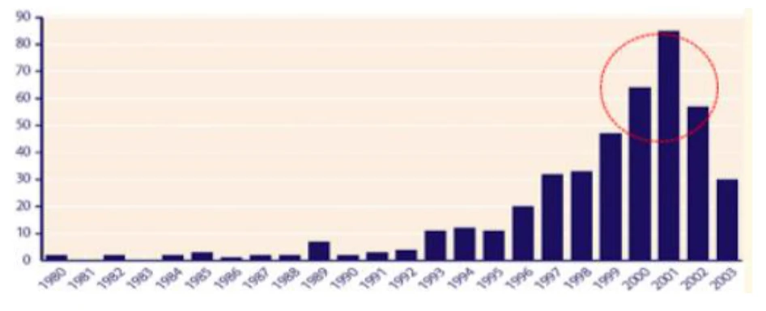
3.2.2 독일의 EXIST와 HTGF
독일은 영국과 함께 유럽에서 우수한 창업생태계를 가진 국가로서 알려져 있으며 균형잡인 지역창업생태계를 보유하였다. 독일은 전통적으로 기초과학연구소, 대학, 공공연구기관 등의 연구 하부구조를 기반으로 산업기술을 발전시켜 왔으며, 산학연공동연구 및 창업을 장려하고 있다. 그 중 산학연을 통한 창업 지원 프로그램인 엑지스트(Exist) 제도는 EU집행위에서 우수 중기 지원사례로 선정돼 역내국 적용확대를 권고하고 있다. 이 프로그램은 독일 고등교육기관 내에 창업열기를 확산하고 창업 수를 증대시키는 것을 목적으로 지역 네트워크 접근 방식을 채택하고 있으며 심사를 거쳐 선택된 네트워크가 대학 내 기업 활동을 개선하는 구조조정과 전략 수행에 대해 지원을 받게 된다. 지원 프로그램인 EXIST-Seed는 과학기업 창업자에게 직접 자금을 제공하고 있다. 1997년 만들어진 엑지스트(Exist)는 대학 및 연구소 등으로부터의 창업 장려를 위해 연방경제기술부(BMWI)가 지난 2004년부터 독일 및 EU에서 자금을 공동으로 출연하여 운영하고 있다. Exist는 아래와 같은 3개 구간(line) 지원프로그램으로 이뤄지며 지원대상 기업 선정 및 지원자금 규모는 대학에 일임하고 있다(김영우, 2018).
<EXIST 프로그램> □ Line 1: 대학 및 연구소내 창업보육센터 육성이다. 이것은 기술 및 지식집약적 벤처산업 기반구축을위해 대학 스스로 연구개발 프로젝트를 지원하거나 창업보육센터를 운영할 수 있도록 지원하는 프로그램으로 선정 대학에는 3년간 육성비 등을 지원한다. □ Line 2: 신생기업 자금지원이다. 대학, 연구기관 등의 창업보육센터내 신생기업 창업 지원하는 프로그램으로 본 연구는 과학자, 졸업생 등의 아이디어를 실제 생산하고 기업으로 경영해볼 수 있도록 아래와 같이 지원하는 제도이다. 지원규모를 보면 1년간 생활비 지원(박사 3000, 석사 2500, 대학생 1000유로) 설비·원자재 구입비용으로 1인당 10,000유로, 팀은 30000유로, 경영컨설팅비로 1회당 5,000유로를 지원한다. 또한 자녀양육비로 1년간 월 100유로씩을 지원한다. □ Line 3: 고도기반기술 창업을 유도하는 것이다. 우수한 연구 프로젝트의 비즈니스 모델 전환을 위해 Line 2의 자금 외에도 다음과 같은 추가지원이 주어지고 있다. 연구원 급여로 월 800 - 2,500유로를 3년간 지원하고, 설비·원자재 구입비로 1인당 60,000유로를 지원하며, 디자인개발을 위해 1회에 한해 150,000 유로를 지원한다. EXIST는 2000년부터 대학의 졸업자, 과학자 및 학생들이 재정적 보조금과 노하우로 창업 프로젝트를 개발하도록 지원, 현재 총 142개의 대학 지원을 하고 있으며 목표는 교육, 연구 및 관리 분야의 스타트업 지원 제안을 통해 혁신적인 스핀오프의 수를 늘리는 것이다.
또한 이러한 정부지원 프로그램을 후속지원 할 수 있는 HTGF(High Tech Growth Fund)를 조성하여 정부차원의 기술기반 초기 투자지원을 하고 있다. 창업 시장내에 존재하는 Funding Gap 해소를 위해 설립된 정부-민간 합작펀드로 투자대상은 초기 단계 기업, 자본공급은 주로 정부가 담당하고, 경영관련 서비스는 민간이 담당하는 형태로 운영하며 위험이 높은 초기 창업단계는 주로 HTGF가 담당하는 형태로 추진되고 있다(KDB, 2015). HTGF의 목적은 수익률에 있지 않고 혁신스타트업 발굴 및 후속투자 유도에 있고, 투자회사 부도율을 약 30%이하로 잡는 것이 목표이다(과학기술연합대학원대학교, 2022). 구체적으로는 HTGF는 기존 VC가 잘 투자하지 않는 사업 초기 단계(Seed Stage)의 스타트업에 약 50만 유로 (약 6억7000만원) 정도 투자를 하면서 주식지분의 15%를 취득하며 2005년부터 680개의 스타트업에 투자를 하였으며 외부 투자자로부터 40억 유로가 넘는 자본 모집, 1,900회 이상의 후속 자금 조달, 160개 이상의 엑시트를 달성하였으며 HTGF 참여 민간기업 매단계마다 증가*하고 있고 독일 벤처투자 규모 1위 펀드로서 자리잡고 있으며 성과는 다음과 같다. * (HTGF Ⅰ) 2억 7200만 유로, 6개→ (HTGF Ⅱ) 3억 400만, 18개 → (HTGF Ⅲ)3억 1950만유로 31개 ( HTGF IV) 4억유로, 40개 이상 추정 (출처, HTGF 홈페이지)
이를 통해 독일은 대학의 우수한 기술을 활용한 창업자를 위해 정부가 주도하여 창업지원 및 펀드를 조성하면서 대학창업활성화와 Funding Gap해소를 하고 있음을 확인하였고 특히 HTGF의 경우 벤처창업 지원을 위해 투자자금을 국가차원에서 지원한다는 점에서 우리나라 한국벤처투자의 모태펀드와 유사하지만 정부기관에서 투자를 위한 자금을 직접 운용한다는 차이점이 있음을 알 수 있었다.
제 4 장 결론 및 시사점
본 연구를 통해 대학사업화를 위해 설립된 기술지주의 현황과 성과, 사례 분석을 통해 우수한 대학사업화 생태계를 만들기 위해 필요한 점들을 도출해 볼수 있었다.
먼저 한국의 기술지주 회사의 경우 자본금과 펀드 결성금이 많고 인력이 많은 유형일수록 우수한 성과를 보인다는 점을 확인하였고 이에 맞는 펀드, 자금지원과 인력지원이 활성화된다면 대학기술지주는 지금보다 활성화될 수 있을 것이라는 가능성을 제시할 수 있다. 이러한 점에서 기술지주의 활성화를 위해서는 인력확보, 출자지원을 위한 자본금 확대와 전용펀드지원을 확대할 필요가 있으며 지분 의무출자와 같은 제도 개선이 필요함을 보여준다. 또한 스타트업의 혁신역량 확대 및 수요견인형 기술마케팅을 위한 액셀러레이터 사업, 공공연구성과 확산 사업, 대학기술경영과 같은 사업에 대해서도 기술지주회사 대상으로 지원을 확대함으로서 기술기반의 스타트업이 캐즘을 극복하면서 더 좋은 실적과 기술사업화 활성화를 이룰 수 있을 것이라고 생각된다. 또한 대학간 네트워크 및 투자생태계 안에서의 네트워크를 지속해서 확장해 나가는 전략을 통해 지속적인 성장동력을 마련해 가고 있는 기술지주의 사례를 제시함으로서 기술지주 회사의 수 있는 가능성도 제시하였다. 단독기술지주회사인 부산대학교기술지주 및 전남대학교기술지주 등에서도 액셀러레이팅 프로그램, 지자체 펀드 조성 등이 추진되고 있기에 향후 성과 달성을 기대해 볼 수 있을 것이다. 영국의 사례에서는 투자기능과 창업보육기능이 함께 있는 영국의 통합형 기술지주 사례를 통해서 우리나라의 기술지주와 창업보육센터의 연계가 활성화 또는 단일화된 조직으로서의 업무 추진을 하는것도 대학사업화 활성화의 하나의 방안임을 보여주고 있다. 이러한 관점에서 단독기술지주는 교내 창업보육센터와 긴밀한 연계방안을 마련하고 공동기술지주는 지역에서 창업보육기능을 하고 있는 창조경제혁신센터 등과 연계점을 찾는다면 성과확산에 도움이 될 것으로 예상된다. 또한 정부의 지원으로 시작하여 자생력을 갖춘 대학사업화 생태계를 만든 영국의 USCF의 사례를 통해 우리나라에서도 기술지주회사의 펀드지원이 확대될 필요성이 있음을 다시한번 시사한다.
독일은 산학연을 통한 창업 지원 프로그램인 EXIST를 통해서 창업자를 지원하고 이후에는 정부 주도의 HTGF를 통해 창업활성화와 Funding Gap 해소를 하고 있음을 확인하였다. HTGF를 통해 벤처투자를 국가차원에서 지원, 운용한다는 점에서 우리나라의 한국벤처투자 모태펀드와 차이점이 있음을 확인하였고 정부기관에서 투자금을 직접 운용을 하면서 투자의 목표가 수익률이 아닌 투자를 추진함으로서 앞서 진행된 창업 프로그램과의 목표측면에서 연계가 되고 있으며 민간에서 펀드에 출자하는 형태로 펀드가 확장되고 있음을 확인하였다. 이에 우리나라의 정부의 창업지원사업과 벤처투자시장의 투자의 목적에 대한 부분의 Gap을 확인하고 이를 줄일 수 있는 방법에 대해 고민해 볼 필요가 있으며 그 대안 중 하나로 정부의 자금으로 설립된 대학기술지주들의 투자역량 확대를 하고 대학사업화의 목적을 갖춘 정부지원사업과의 펀딩 연계를 활성화한다면 우수 성과가 나올 수 있음을 시사한다.
본 연구의 한계점으로는 비교한 유형별 기술지주회사들의 성과에 있어서 중요할 수 있는 연관 대학이 보유한 기술의 우수성, 창업자들의 기업가정신, 참여인력들의 우수성 및 각 출자회사의 우수성에 대한 질적 부분을 측정하지 못한 상태에서 비교하였다는 점이 있으며 유형별 기술지주 분석 시에도 사업 추진연도 등 동일하지 못한 배경에서의 비교를 진행하였다는 점이 있다. 그 외에도 복잡계를 띄는 창업생태계 및 투자생태계에서 다양한 변수를 고려하지 못하다는 점에서 통계적의의를 가지지 못하는 현황들로 추정을 하였다는 점이 있다. 이번 연구를 통해서 창업생태계에서 대학자원을 활용할 수 있는 잠재력을 가진 자원인 대학기술지주들의 활성화를 위해 정부와 지자체가 대학창업의 활성화를 위해 재원마련 및 제도개선 등에 대해 추진을 고려하고 기술지주회사들의 활성화 방안에 대한 연구가 지속되길 바란다.
Reference
- Uyarra, E. (2010). What is evolutionary about 'regional systems of innovation'? Implications for regional policy? Journal of Evolutionary, Economics, 20(1), 1227-1246 대학 소재지에 따른 청년의 노동시장 이행 궤적 분석: 수도권과 지방대학 졸업생의 비교를 중심으로(임한려, 홍성표, 2020) 한국 대학벤처캐피탈의 투자성과에 대한 연구 (김도성, 안성필, 2020) 대경공동기술지주회사의 성공적 설립·운영에 관한 연구(2015, 박민규) 공동기술지주회사를 통한 기술이전 사업화 활성화 방안 (STEPI, 2014) 기술수요자 관점의 공공기술사업화 추진성과에 관한 연구(서일원, 2017) 기술사업화 촉진을 위한 핵심 주체간 Co-creation 전략, 과학기술정책연구원(손수정･임채윤･홍성민･김지선･최치호･박종복,2019) 산학협력기술지주회사의 문제점 진단과 발전방안(이태희, 2019) 대학 기술지주회사제도 개선방안(정동덕, KISTEP, 2021) 기술창업의 성공조건과 지원정책, 정책연구 2013-07, (이윤준·정기철·장병열·나청호, 과학기술정책연구원, 2013) 한성호(2014), “주요 선진국의 공공개발 사업화 추세와 정책”, STEPI Issue Paper, 2014-13
- Love, H.(2016). The Start-Up J Curve: The six steps to Entrepreneurial Success. Greenleaf Book Group Press 스타트업 성장단계 구분에 대한 탐색적 연구(김선우, 2020) 정보 확산 과정의 변화에 따른 스마트폰 기반 모바일 뱅킹 서비스사용 의도 결정요인에 관한 연구(김진성, 김종기, 2018) 혁신확산이론에 따른 스마트폰 만족도와 추천의도 연구: 스마트폰 수용시점에 따른 비교 고찰(서영수, 이승신, 2014) 혁신확산이론에 따른 스마트폰 수용의도에 관한 연구 스마트폰 미사용자를 중심으로(김정욱, 김성일,2012) Diffusion of Innovations(Forth Edition), The Free Press, New York, (Rogers, E. M., 1995. 2003) Moore, G. A. (1991). Crossing the Chasm: Marketing and Selling High-Tech Goods to Mainstream Customers. New York: Harper Business.
- 최성욱(2016) ‘우리나라 IPTV(Internet Protocol TV) 목표시장 설정과 향후 미래 전망에 대한 고찰 - 캐즘이론을 중심으로’ 석재환, 2019) ’기술수용모델을 활용한 스마트폰 얼리어답터의 만족도와 추천의도 분석’ 최윤수·김도현(2016). 투자 행태를 통한 액셀러레이터와 벤처캐피탈의 비교 연구, 벤처창업연구, 11(4), 27-36.
- Cohen, S., & Hochberg, Y.(2014). Accelerating startups: The seed accelerator phenomenon, SSRN Journal, 1-16
- Cohen, S. L., Bingham, C. B., & Hallen, B.(2018). The Role of Accelerator Designs in Mitigating Bounded Rationality in New Ventures, Administrative Science Quarterly.
- 김용재·염수현(2014). 벤처 액셀러레이터의 이해와 정책방향. KISDI Premium Report, 19.
- 이정우(2016). 창업대중화의 주역, 액셀러레이터, Entrepreneurship Korea, 1, 7-10.
- 중소벤처기업부(2018). 창업기획자(액셀러레이터) 등록 절차 및 준비서류, 대전. Hallen, B.L.; Cohen, S.L.; Bingham, C.B. Do accelerators work? If so, how? Organ. Sci. 2020, 31, 378–414. 2022 대한민국 액셀러레이터 현황리포트, 스타트업레시피 액셀러레이팅과 기업가정신이 스타트업의 스케일업에 미치는 영향에 관한 실증연구(김영범, 양동우, 2021) Miller, P. and K. Bound(2011), “The startup factories”, NESTA, http://www.nesta.org.uk/library/documents/StartupFactories, pdf.
- Bergmann T. and Rothausen T.(2020), “Supporting start-ups in the process industries with accelerator programs: Types, design elements and success measurement”, Journal of Business Chemistry, Vol.17, Iss.3, pp. 81-123.
- 최중빈(2019), “엑셀러레이터의 관계효익이 서비스 관계 질과 장기지향성에 미치는 영향 연구”, 인하대학교 대학원.
- 최윤수, 김도현(2016), “투자행태를 통한 엑셀러레이터와 벤처캐피탈의 비교연구”, ｢벤처창업연구｣, 제11 권, 제4 호, pp.27-36.
- Cohen, S.(2013), “What do accelerators do? Insights from incubators and angels”, Innovations: Technology, Governance, Globalization, Vol.8, No.3-4, pp.19-25. Hallen, B.L., Bingham, C.B.
- & Cohen, S.(2014), “Do Accelerators Accelerate? A Study of Venture Accelerators as a Path to Success?”, In Academy of Management Proceedings, 2014(1), 12955. Academy of Management..
- Birdsall, M., Jones, C., Lee, C., Somerset, C. and Takaki, S.(2013), “Business accelerators: The evolution of a rapidly growing industry”, University of Cambridge, Cambridge(MBA Dissertation ad Judge Business School and Jesus College). Barrehag, L., Fornell, A., Larsson, G., Mardstrom, V., Westergard, W. and Wrackefeldt, S.(2012), “Accelerating success: A study of seed accelerators and their defining characteristics, Chalmers University of Technology, pp. 14-15. Rosenbusch, N., Brinckmann, J. & Müller, V.(2013), “Does acquiring venture capital pay off for the funded firms? A meta-analysis on the relationship between venture capital investment and funded firm financial performance”, Journal of Business Venturing, Vol.28, No.3, pp.335-353
- Rosenkopf, L., & Tushman, M. L.(1994). Technology and organization. Evolutionary dynamics of organizations, 1(1), 403
- Graham, S. J., Merges, R. P., Samuelson, P., & Sichelman, T.(2009). High technology entrepreneurs and the patent system: Results of the 2008 Berkeley patent survey. Berkeley Technology Law Journal, 24(4), 1255.
- 강유리(2014), “스타트업 육성 프로그램 성과 정보 제공 현황과 과제: 엑셀러레이터(accelerator)를 중심으로”, ｢초점｣, 제26 권 제9 호, pp.1-19.
- Wallenius J.(2018), “Long-term impacts of startup accelerators”, Aalto University school of business.
- Dilemma B. B.(2020), “How corporate and traditional accelerators impact startup trajectory through funding”, BI Norwegian Business School-campus Oslo.
- 나기혁(2019), “액셀러레이터가 스타트업에 미치는 영향고찰: 네트워크 관점을 중심으로”, ｢벤처창업연구｣, 제14 권 제1 호, pp.85-99. DOING TECHNOLOGY TRANSFER IN FEDERAL LABORATORIE.S (PART 1)”, Technology Transfer, Spring-Summer 1992, pp.8-23. 기술혁신과 경영(지일용, 2021) Understanding Technology Transfer. Assist. Technol. 1999, 11, 5-19_**Joseph P. Lane M.B.P.A.
- 박웅 박호영 (2014), “기술사업화의 비즈니스 생태계 모형에 관한 연구: 공공 연구개발성과사업화에의 적용을 중심으로”, ｢기술혁신학회지｣, 17(4): 786-819.
- 석명섭,조병휘,지일용 (2015), “인용 네트워크 분석을 활용한 기술마케팅의 효과성 제고방안에 관한 연구”, ｢한국산학기술학회지｣, 16(5): 3210-3219
- Bygrave, W. D.(1987), Syndicated Investments by Venture Capital Firms; A Networking Perspective,” Journal of Business Venturing, vol. 2(2), pp.139∼154. 오진섭․김병근.(2017). 국내 벤처캐피탈의 투자위험회피활동과 차별적 특성이 피투자기업의 경영성과에 미치는 영향. 중소기업연구, 39(2), 89-107.
- Bonacich, P. (1987). Power and Centrality: A Family of Measures. American Journal of Sociology, 92(5), 1170-1182
- Abell, P., & Nisar, T. M.(2007). Performance Effects of Venture Capital Firm Networks. Management Decision, 45(5), 923-936 수요기업 중심의 정부출연연구기관 기술이전 활성화 방안: K 연구원 사례를 중심으로(황현덕, 정선양, 2015) 이성상(2009). 『기술지주회사 중심의 기술이전·사업화 역할 강화 방안』. 한국 지식재산연구원. 해외 기술지주회사 운영사례 분석 및 시사점(이성상 2022) 독일의 창업정책과 정책적 시사점 김영우, 2018 주요 선진국 벤처금융제도 특징분석과 시사점(KDB 2015) EU 와 유럽 주요국 연구개발시스템동향(과학기술연합대학원대학교, 2022) 기술지주회사 자회사의 기술사업화 애로요인 분석 - 부산지역을 중심으로(허필우, 2018) 대학기술사업화 대학기술경영센터(TMC)에서 길을 묻다(과기부, 2022)